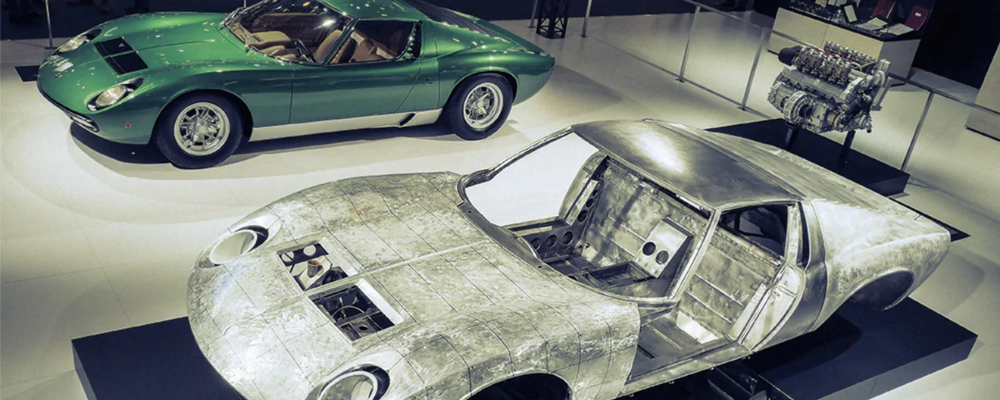

The Polo Storico provides a four-level certification for Lamborghini's historical models. As such, any certifications previously issued by any other body should be verified by the Polo Storico. A technical committee checks the authenticity of the vehicle and its components, drawing from the resources of Lamborghini's archive and other documentation to implement the verification of its origin and authenticity. There is not any single person able to certify a vehicle and the various certification levels depend on whether the car passes a long series of conformity tests. The support of the Polo Storico provides the most coveted acknowledgement, protecting the value of Lamborghini's historical cars, and supporting the market with a single standard for car authentication.
